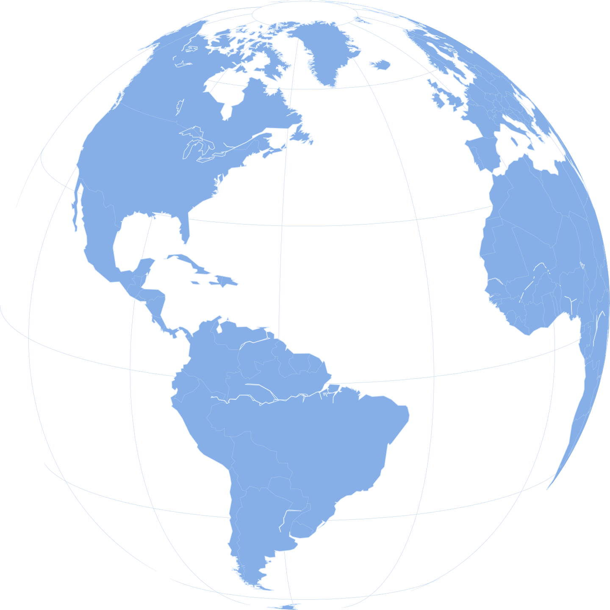

Europa + AméricaPresencia internacional
ICO ALREDEDOR DEL MUNDO
Una comunidad. Distintas ciudades.
Comunicación que conecta personas, ciudades y culturas.

20 lugaresCiudades, países y regiones
Una comunidadConectada por la comunicación
México
🇲🇽
Monterrey · CDMX · Guadalajara
España
🇪🇸
Madrid · Barcelona · Valencia · Mallorca · Andalucía · País Vasco · Aragón · Catalunya
Latinoamérica
🇨🇷 🇪🇨 🇵🇪 🇧🇷 🇦🇷 🇨🇴 🇻🇪
Costa Rica · Ecuador · Perú · Brasil · Argentina · Colombia · Venezuela
Otros lugares
🇺🇸 🇩🇪
Miami · Alemania
EXPERIENCIAS EN DISTINTAS CIUDADES

🇪🇸Madrid, España

🇩🇪Alemania

🇲🇽CDMX, México

🇨🇷Costa Rica

🇵🇪Perú

🇧🇷Brasil

🇪🇸Valencia, España

🇪🇸País Vasco, España